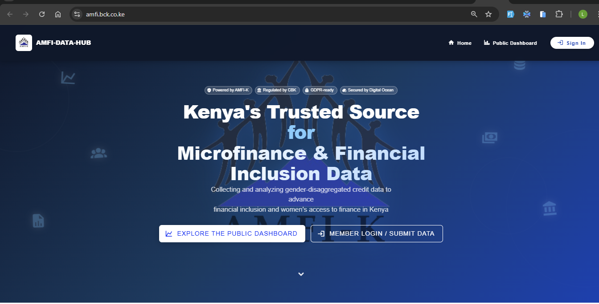

AMFI-K Data Hub
Centralised platform digitising the Association of Microfinance Institutions of Kenya's data collection and member management — surveys, payments, audit logs, and approvals in one place.
- Structured data-collection periods with deadlines
- Custom survey builder with drag-and-drop
- Organisation registration & approval workflows
- OTP auth + JWT + role-based routing
- Payment tracking and receipt generation
- Comprehensive audit logs & compliance

1600 × 1000 · Recommended